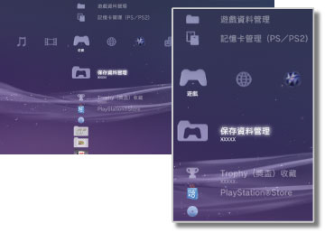

遊戲 > 遊戲簡介
遊戲簡介
選擇 （遊戲）時，會顯示以下的圖示。但顯示的圖示可能因操作狀況而異。
（遊戲）時，會顯示以下的圖示。但顯示的圖示可能因操作狀況而異。

 |
PlayStation®Store | 顯示PlayStation®Store的情報。 |
|---|---|---|
 |
離開遊戲 | 離開PlayStation®3規格軟件的遊戲。僅於啟動遊戲時顯示。 |
 |
（標題） | 可遊玩PlayStation®3規格的遊戲軟件。選擇圖示後會顯示形象圖。 |
  |
PlayStation®2 規格的光碟 | 可遊玩PlayStation®2規格的遊戲軟件。 |
| PlayStation® 規格的光碟 | 可遊玩PlayStation®規格的遊戲軟件。 | |
 |
保存資料管理 | 可複製／刪除PlayStation®3規格之軟件的保存資料或閱覽詳細資訊。 |
 |
記憶卡管理(PS/PS2) | 可新建能保存PlayStation®2 / PlayStation®規格之遊戲資料的內置記憶卡或指定插口。此外，尚能複製／刪除保存資料或閱覽詳細資訊。 |
 |
遊戲資料管理 | 可保存部份遊戲的追加資料等。亦可刪除資料或預覽詳細資訊。 |
 |
Trophy（獎盃）收藏 | 顯示在支援此機能的遊戲中取得的獎盃。在遊戲中達成一定條件後，即能取得獎盃。 |
| （已安裝至硬碟的遊戲） | 已安裝至硬碟的遊戲。會顯示遊戲的形象圖。顯示的圖示會因遊戲的種類而異。 | |
 |
（下載至硬碟的資料） | 下載至硬碟的遊戲與遊戲的追加資料。啟動後會自動安裝該資料。圖示可能因資料類型而異。 |
提示
- 已設定視聽年齡限制的內容會以
 或
或 顯示。需輸入4位數的密碼才能開始播放或遊玩。進入
顯示。需輸入4位數的密碼才能開始播放或遊玩。進入 （設定）＞
（設定）＞ （加密設定），即可設定密碼。
（加密設定），即可設定密碼。 - 若使用HDMI連接線連接不支援HDCP（High-bandwidth Digital Content Protection）規格的裝置，將無法顯示PS3™輸出的影像與聲音。
- 若想使用1080p解析度輸出內建著作權保護機能之Blu-ray Disc（藍光光碟）的影像，需使用HDMI連接線連接支援HDCP規格的裝置。
- PS3™可能因光碟或儲存媒體等種類的限制，而出現無法正確辨識的情形。
重要
- 部分PlayStation®2、PlayStation® 規格之軟件可能會於插入PS3™啟動時，出現與以往之PlayStation®2 或PlayStation® 主機不同的動作，或是無法正常啟動的現象。
- 此外，部份PS3™並不支援PlayStation®2規格軟件的播放。詳細請參閱［關於可播放的光碟種類］、各區域的官方網站或主機隨附的使用說明書。